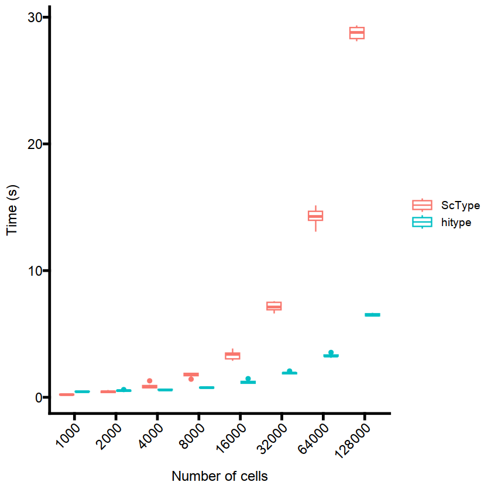

Hitype is faster than ScType
hitype-is-faster.Rmd
suppressPackageStartupMessages(library(dplyr))
suppressPackageStartupMessages(library(Seurat))
suppressPackageStartupMessages(library(HGNChelper))
suppressPackageStartupMessages(library(openxlsx))
suppressPackageStartupMessages(library(ggplot2))
suppressPackageStartupMessages(library(tidyr))
suppressPackageStartupMessages(library(hitype))
suppressPackageStartupMessages(library(microbenchmark))
# load sc-type
source("https://raw.githubusercontent.com/IanevskiAleksandr/sc-type/master/R/gene_sets_prepare.R")
source("https://raw.githubusercontent.com/IanevskiAleksandr/sc-type/master/R/sctype_score_.R")
scRNAseqData <- readRDS(gzcon(url(
'https://raw.githubusercontent.com/IanevskiAleksandr/sc-type/master/exampleData.RDS'
)))
rownames(scRNAseqData) <- toupper(rownames(scRNAseqData))
# Gene sets for ScType
gs_list = suppressWarnings(gene_sets_prepare(
"https://raw.githubusercontent.com/IanevskiAleksandr/sc-type/master/ScTypeDB_short.xlsx",
"Immune system"
))
# Gene sets for hitype
gs = suppressWarnings(gs_prepare(hitypedb_short, "Immune system"))
# Prepare expression matrix for different number of cells
all_cells <- colnames(scRNAseqData)
exprs1000c <- scRNAseqData[, sample(all_cells, 1000, replace = TRUE)]
exprs2000c <- scRNAseqData[, sample(all_cells, 2000, replace = TRUE)]
exprs4000c <- scRNAseqData[, sample(all_cells, 4000, replace = TRUE)]
exprs8000c <- scRNAseqData[, sample(all_cells, 8000, replace = TRUE)]
exprs16000c <- scRNAseqData[, sample(all_cells, 16000, replace = TRUE)]
exprs32000c <- scRNAseqData[, sample(all_cells, 32000, replace = TRUE)]
exprs64000c <- scRNAseqData[, sample(all_cells, 64000, replace = TRUE)]
exprs128000c <- scRNAseqData[, sample(all_cells, 128000, replace = TRUE)]
bm <- suppressWarnings(microbenchmark(
ScType_1000 = sctype_score(
scRNAseqData = exprs1000c,
scaled = TRUE,
gs = gs_list$gs_positive,
gs2 = gs_list$gs_negative
),
ScType_2000 = sctype_score(
scRNAseqData = exprs2000c,
scaled = TRUE,
gs = gs_list$gs_positive,
gs2 = gs_list$gs_negative
),
ScType_4000 = sctype_score(
scRNAseqData = exprs4000c,
scaled = TRUE,
gs = gs_list$gs_positive,
gs2 = gs_list$gs_negative
),
ScType_8000 = sctype_score(
scRNAseqData = exprs8000c,
scaled = TRUE,
gs = gs_list$gs_positive,
gs2 = gs_list$gs_negative
),
ScType_16000 = sctype_score(
scRNAseqData = exprs16000c,
scaled = TRUE,
gs = gs_list$gs_positive,
gs2 = gs_list$gs_negative
),
ScType_32000 = sctype_score(
scRNAseqData = exprs32000c,
scaled = TRUE,
gs = gs_list$gs_positive,
gs2 = gs_list$gs_negative
),
ScType_64000 = sctype_score(
scRNAseqData = exprs64000c,
scaled = TRUE,
gs = gs_list$gs_positive,
gs2 = gs_list$gs_negative
),
ScType_128000 = sctype_score(
scRNAseqData = exprs128000c,
scaled = TRUE,
gs = gs_list$gs_positive,
gs2 = gs_list$gs_negative
),
hitype_1000 = hitype_score(exprs1000c, gs, scaled = TRUE),
hitype_2000 = hitype_score(exprs2000c, gs, scaled = TRUE),
hitype_4000 = hitype_score(exprs4000c, gs, scaled = TRUE),
hitype_8000 = hitype_score(exprs8000c, gs, scaled = TRUE),
hitype_16000 = hitype_score(exprs16000c, gs, scaled = TRUE),
hitype_32000 = hitype_score(exprs32000c, gs, scaled = TRUE),
hitype_64000 = hitype_score(exprs64000c, gs, scaled = TRUE),
hitype_128000 = hitype_score(exprs128000c, gs, scaled = TRUE),
times = 10,
unit = "ms"
))Plot the results:
theme_set(ggprism::theme_prism(axis_text_angle = 45))
bm = bm %>% mutate(
tool = if_else(grepl("ScType", expr), "ScType", "hitype"),
ncells = as.numeric(stringr::str_extract(expr, "\\d+")),
time = time / 1e9
) %>%
ggplot(aes(x = as.factor(ncells), y = time, color = tool)) +
geom_boxplot() +
labs(x = "Number of cells", y = "Time (s)")